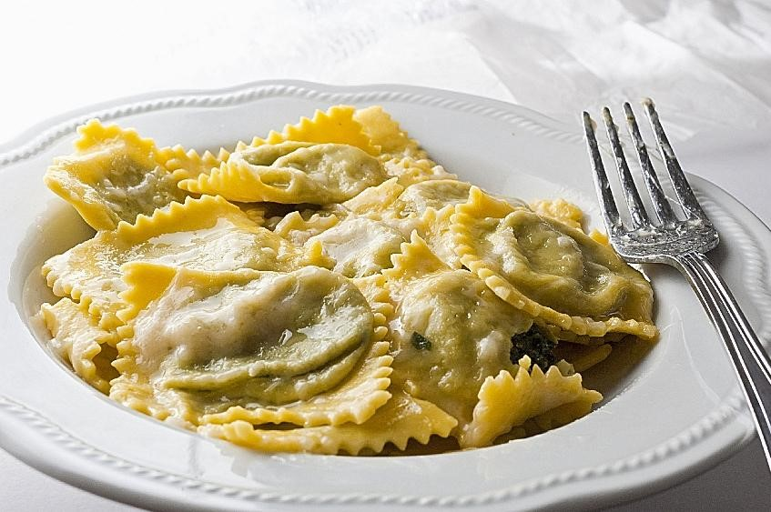
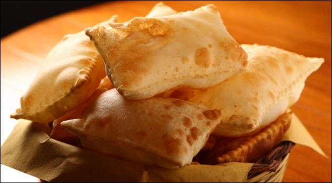
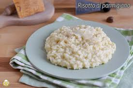

Tortelli
Ingredienti: Farina, uova, ripieno di carne o verdure.
Torta fritta
Ingredienti: Farina, acqua, strutto.
Risotto al parmigiano
Ingredienti: Riso, brodo, parmigiano.
Ingredienti: Farina, uova, ripieno di carne o verdure.
Ingredienti: Farina, acqua, strutto.
Ingredienti: Riso, brodo, parmigiano.
Vuoi scoprire dove mangiare cibi come questi? Scoprilo nella prossima sezione di questo sito.